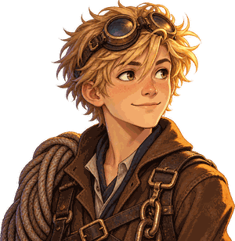

Senn and Pip
Two fast guest heroes, one who hits hard and one whose attacks never miss.
On this page

Senn and Pip are guest heroes. They join the party for part of the story, have no Mainspring boards, and arrive with their own gear. Both are fast.
Senn
A courier from the city in the rain. Observant, impatient with grand explanations, delighted by small freedoms.
Senn is a courier from the city in the rain. He joins in Chapter 3 and is the fastest hero in the party.
| Role | Courier |
| Weapon kind | opener |
| Joins | Chapter 3 (guest) |
| Starting gear | Letter Opener, Travelling Coat. |
| Chime | Last Post |
| Mainspring board | No (a guest) |
- Pickpocket hits for 0.8x Attack and has a 60 percent chance to lift an item the Rust was carrying.
- Shortcut is a light hit that brings Senn back almost at once.
- Express hurries every friend for two turns.
- His Chime, Last Post, is one enormous hit (3.4x Attack) on a single foe: save it for a boss.
Skills
Wind is what a skill costs. The Chime is a free limit move once the Chime meter is full (see Bonds, Chains and Chimes).
| Skill | Learned | Wind | Targets | Element | Effect | In the game's words |
|---|---|---|---|---|---|---|
| Pickpocket | At the start | 3 | one foe | plain | Hits for 0.8x Attack; 60% to lift an item | A quick strike, and a quicker hand: may lift something the Rust was carrying. |
| Shortcut | At the start | 5 | one foe | plain | Hits for 0.6x Attack; caster's next turn comes sooner (x0.2 wait) | Senn knows a way round: a light hit, and he's back almost at once. |
| Express | At the start | 9 | all friends | plain | 100% to inflict Hurried for 2 turns | Everyone hurries for a while. |
| Last Post | Chime (limit move) | 0 | one foe | plain | Hits for 3.4x Attack | Senn's Chime: one delivery nobody can refuse. |
Stats
Base stats at level 1, with the gain per level in brackets (before gear, Mainspring and difficulty). Heroes also gain a little extra power in battle for each level above 10.
| HP | Wind | Attack | Defence | Mind | Speed |
|---|---|---|---|---|---|
| 60 (+7) | 16 (+2) | 15 (+2.2) | 9 (+1.2) | 9 (+1) | 19 (+0.7) |
Stats at set levels (no gear, no Mainspring):
| Level | HP | Wind | Attack | Defence | Mind | Speed |
|---|---|---|---|---|---|---|
| 1 | 60 | 16 | 15 | 9 | 9 | 19 |
| 10 | 123 | 34 | 35 | 20 | 18 | 25 |
| 20 | 193 | 54 | 57 | 32 | 28 | 32 |
| 30 | 263 | 74 | 79 | 44 | 38 | 39 |
| 40 | 333 | 94 | 101 | 56 | 48 | 46 |
| 50 | 403 | 114 | 123 | 68 | 58 | 53 |
| 60 | 473 | 134 | 145 | 80 | 68 | 60 |
Pip
Belcourt's steeplejack. Climbs the bell tower for fun, and never misses.
Pip is Belcourt's steeplejack. He joins in Chapter 3, and returns later in the story. His attacks never miss, even against fliers.
| Role | Steeplejack |
| Weapon kind | sling |
| Joins | Chapter 3 (guest), and again in Chapter 8 |
| Starting gear | Belfry Sling, Travelling Coat. |
| Chime | Steeplejack |
| Mainspring board | No (a guest) |
- Long Shot hits for 1.3x Attack and never misses.
- Flare is a belfry flare: Spark across every foe, with a 30 percent chance to Daze.
- Rope Swing is a hit that brings Pip's next turn sooner.
- His Chime, Steeplejack, is a rain of shot on every foe that never misses (2.1x Attack).
Skills
Wind is what a skill costs. The Chime is a free limit move once the Chime meter is full (see Bonds, Chains and Chimes).
| Skill | Learned | Wind | Targets | Element | Effect | In the game's words |
|---|---|---|---|---|---|---|
| Long Shot | At the start | 3 | one foe | plain | Hits for 1.3x Attack; never misses | From the top of anything: never misses, even fliers. |
| Flare | At the start | 6 | all foes | Spark | Hits for 0.7x Mind (Spark); 30% to inflict Dazed for 2 turns | A belfry flare: Spark across every foe, and a dazzle. |
| Rope Swing | At the start | 4 | one foe | plain | Hits for 1x Attack; caster's next turn comes sooner (x0.5 wait) | Swings in, swings out. Pip's next turn comes sooner. |
| Steeplejack | Chime (limit move) | 0 | all foes | plain | Hits for 2.1x Attack; never misses | Pip's Chime: a rain of shot from the highest point around. |
Stats
Base stats at level 1, with the gain per level in brackets (before gear, Mainspring and difficulty). Heroes also gain a little extra power in battle for each level above 10.
| HP | Wind | Attack | Defence | Mind | Speed |
|---|---|---|---|---|---|
| 56 (+6.5) | 18 (+2.2) | 15 (+2.1) | 8 (+1.1) | 12 (+1.6) | 15 (+0.55) |
Stats at set levels (no gear, no Mainspring):
| Level | HP | Wind | Attack | Defence | Mind | Speed |
|---|---|---|---|---|---|---|
| 1 | 56 | 18 | 15 | 8 | 12 | 15 |
| 10 | 114 | 38 | 34 | 18 | 26 | 20 |
| 20 | 180 | 60 | 55 | 29 | 42 | 25 |
| 30 | 244 | 82 | 76 | 40 | 58 | 31 |
| 40 | 310 | 104 | 97 | 51 | 74 | 36 |
| 50 | 374 | 126 | 118 | 62 | 90 | 42 |
| 60 | 440 | 148 | 139 | 73 | 106 | 47 |